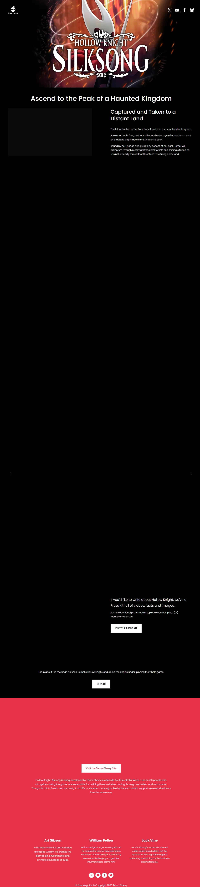
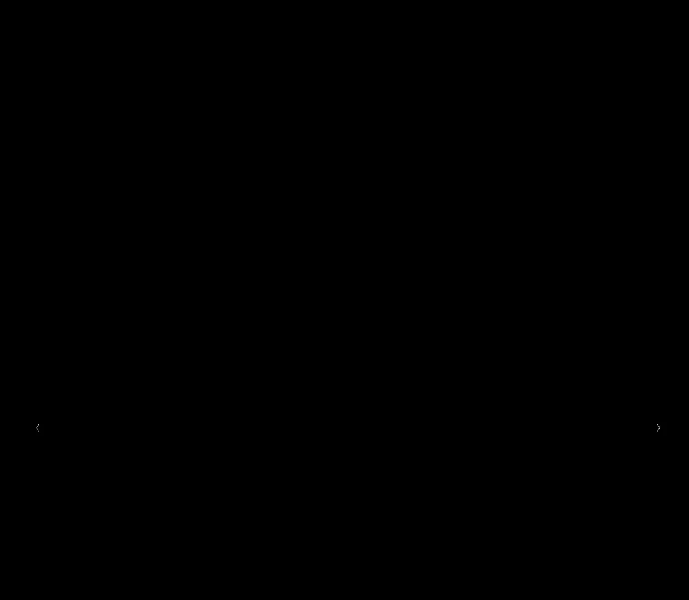
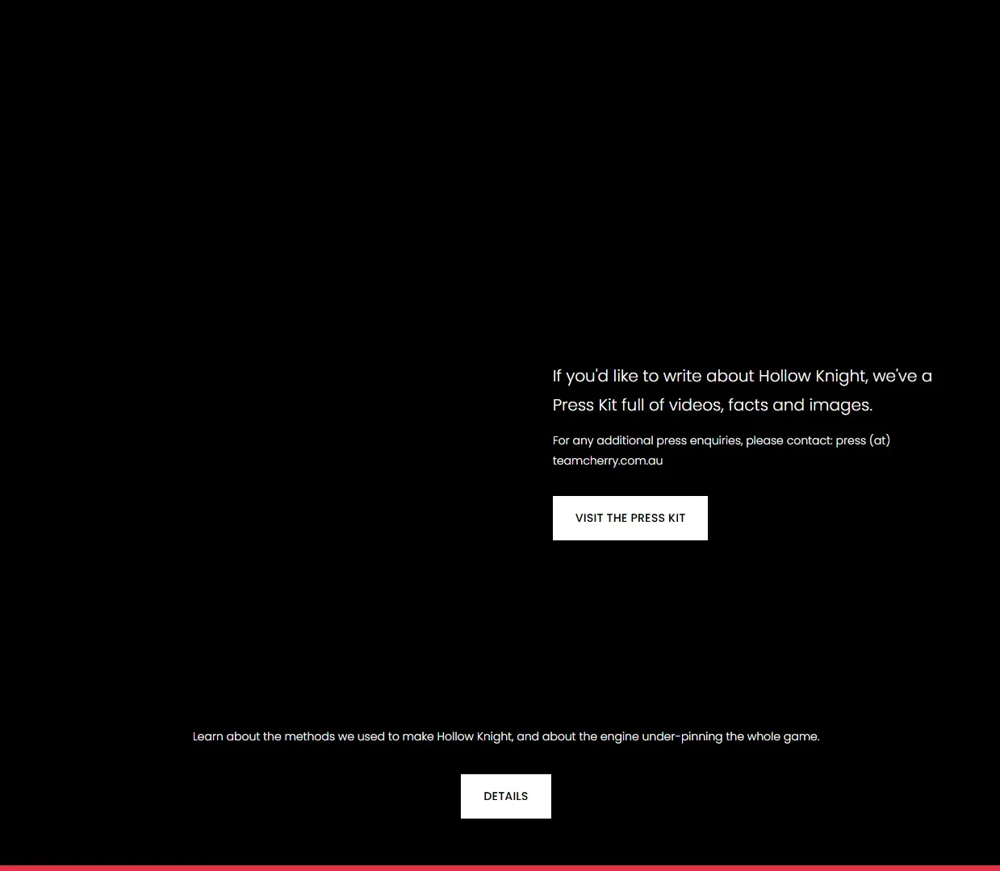
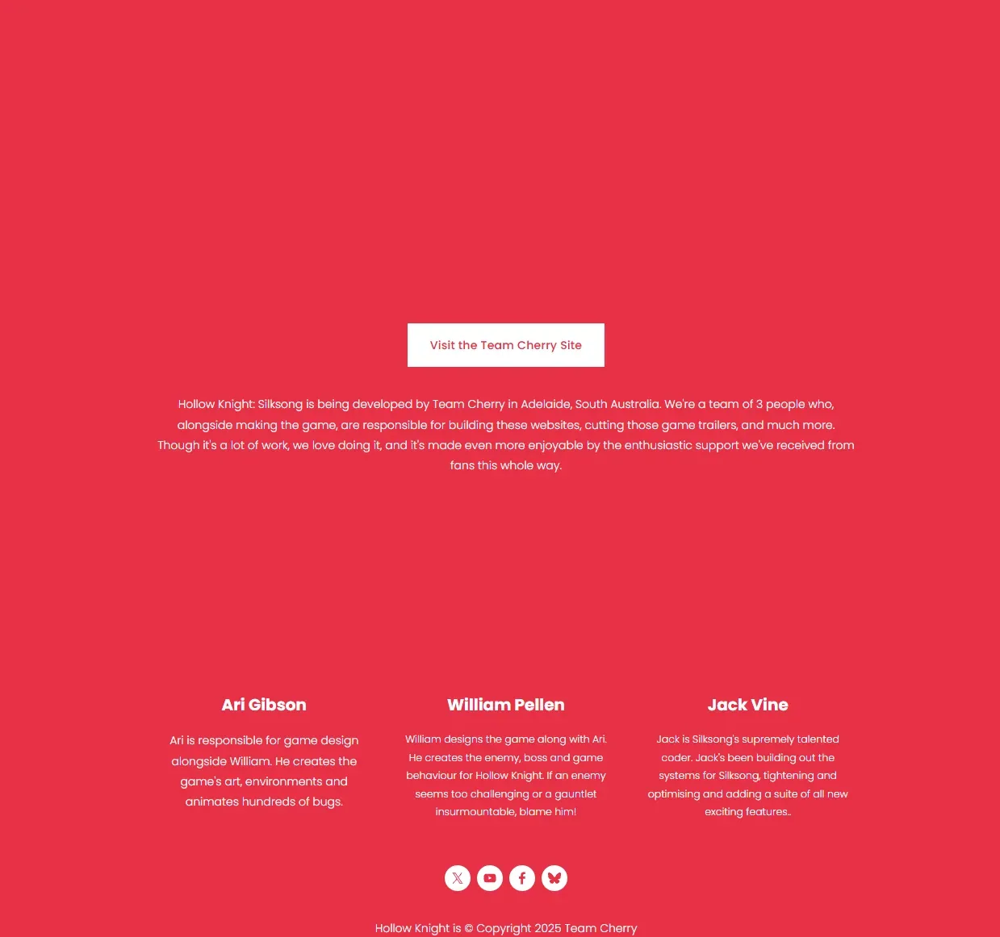

Team Cherry 独立游戏美术标杆，空洞骑士续作，类银河恶魔城。




想象一座从地底蚁穴延伸到云端钟楼的巨大昆虫王国——苔藓花园泛着翡翠色微光，蜜蜂王国的墙壁流淌着琥珀色蜂蜜，深层熔炉的暗红火焰在黑暗中跳动。这不是 Hallownest——这是Pharloom，一片被「歌声」控制的陌生大陆。空气中回荡着看不见的旋律，每一只昆虫都在那个节奏里机械般地劳作。Team Cherry 用 3 人团队手绘出了这片 4 层景深的微观史诗——每一帧背景都是独立画作。
她叫大黄蜂——Hallownest 的公主，被掳至此地。她的武器是一根银白色的针，丝线拖尾在暗色世界里划出一道道优雅的光弧。她比前作的骑士更快、更轻、更具攻击性——墙跳、丝线拉扯、空中突刺，每一步都在向上攀爬。Pharloom 的统治者用歌声编织了一张无形的网，而她手中的针就是剪刀。
那只在翡翠花园角落等你的螳螂武者，它教你的不只是剑术还有关于自由的代价；那场在钟楼顶端发生的 Boss 战，背景从黄昏渐变为星空——整个战场在随你的胜负呼吸；那张你花三十分钟才走通的手绘地图，拐角后出现的新区域让你忘记了刚才死了多少次。这不是一个关于复仇的故事，是一个关于「丝线能不能切断歌声」的故事——Pharloom 的钟声已经响了，你准备向上爬了吗？
昆虫微观 × 手绘暗色诗学，是 Team Cherry 把全手绘 2D 背景美术（每帧画作级密度、4 层景深、点光源暖色焦点）和昆虫文明的微观世界观反直觉地赋予了史诗级叙事重量的独立美学。底色是暗色调的昆虫王国——甲壳、丝绸、灯笼、骨钉；变异在于每个区域的专属色彩主题创造了令人窒息的美术密度。色彩锁定银白丝线 + 翡翠苔藓 + 暗紫深渊三色组合。整体调性介于吉卜力的自然诗意和《黑暗之魂》的碎片化忧伤之间。
手绘 2D 动作美学的演化跨越了三十多年。1986 年宫崎骏《天空之城》为手绘动画中的废墟探索和微观自然美学提供了视觉原型。1994 年《超级银河战士》（Super Metroid）定义了银河恶魔城品类的暗色探索美学。1997 年宫崎骏《幽灵公主》把自然与文明冲突的手绘表达推到巅峰。2006 年吉列尔莫·德尔·托罗《潘神的迷宫》在电影中融合昆虫质感与暗色童话。2014 年《奥日与黑暗森林》（Ori）重新证明了手绘 2D 在现代游戏中的视觉竞争力。2017 年《空洞骑士》初代以 3 人团队做出了超越 3A 的 2D 美术密度。2025 年《丝之歌》将这套美学从地下推向云端——垂直结构让手绘背景的层次感达到了独立游戏的历史最高水平。
基于体验清单 · 审美偏好 · IP故事三维度综合选出